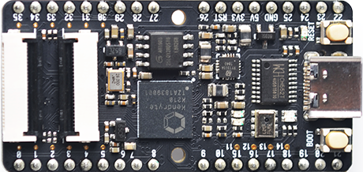

Sipeed Hardware
Maix—I
K210 核心模组
Maix 系列开发板
| 型号 | 图片 |
|---|---|
| Maix Go |  |
| Maix Dock |  |
| Maix Duino |  |
| Maix Bit |  |
| Maix Cube |  |
| Maix Amigo |  |
| Maix nano |  |
产品技术支持
Maix系列产品可以在多种场景实现客户不同方面的需要，在AIoT上已经广泛的使用，品质和性能在行业内已经有非常好的口碑，专业的技术团队为广大客户解决硬件设计和软件功能上的各种各样问题。专业技术支持和更详细资料请联系商务mailto:support@sipeed.com。